图形用户界面的使用
图形用户界面（Graphical User Interface）和命令行界面（Command-Line Interface）是两种常见的软件用户界面。 对于新手来说，图形界面往往比命令行更友好。 因此本工具箱提供了一个图形界面，用于帮助初学者更快地熟悉旁路分析的流程。
Contents
图形界面的启动
启动图形界面很简单，只需要在 MATLAB 的 Command Window 中输入如下命令：
稍等几秒，你就能看到如下界面：
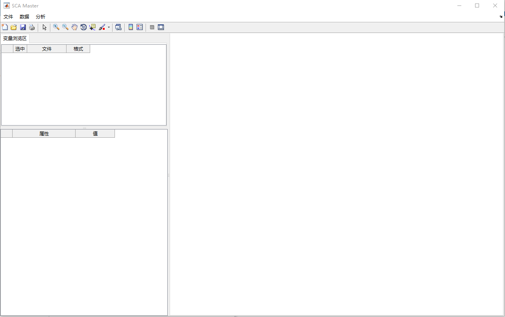
界面有如下几个部分：
- 菜单栏（上方）：用于执行一系列针对功耗曲线的操作，比如导入、查看和分析
- 变量浏览区（左上）：可以查看当前导入的功耗曲线文件和正在的中间曲线
- 信息展示区（左下）：展示所选功耗曲线文件的相关细节
- 曲线绘制区（右侧）：绘制并查看曲线
导入功耗曲线
假定你现在已经通过设备采集了硬件的功耗曲线，其格式为 .trs。你可以通过如下方法导入该曲线：
- 在菜单栏中点击：文件 > 导入
- 这时会弹出文件选择的窗口，你可以选择一个或多个采集到的功耗曲线文件。
导入曲线后，变量浏览区如下所示：
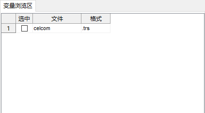
曲线的基本信息
在变量浏览区，单击新增的曲线所在行，你会发现下面的信息区表格中出现了该文件的一些基本信息。
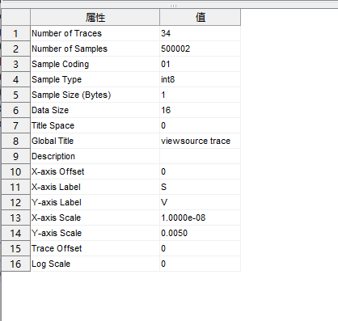
这些信息包括：文件中曲线的条数、每条曲线的样本点数、样本点的数值格式，等等。
我们在后续处理这些曲线时，这些信息会很有用。
.trs 格式转为 .mat 格式
设备采集得到的功耗曲线文件一般是 .trs 格式的，而适合 MATLAB 处理的是 .mat 格式。 因此需要将 .trs 格式的文件转换成 .mat 格式。 操作方法如下：
- 在变量浏览区左键单击该曲线所在行，右键选择“转换成 .mat 格式”
- 这时会弹出文件保存的窗口，你可以重命名该文件以符合习惯，点击“确定”开始转换
- 转换完成会提示是否打开转换后的 .mat 文件
- 如果选择打开，你将看到变量浏览区多了一行，其格式为 .mat
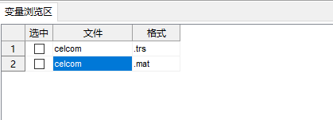
查看曲线
得到 .mat 格式的文件后，我们选中新增的这一行，右键，可以看到我们能实施的操作变多了。
我们选择“查看曲线”：
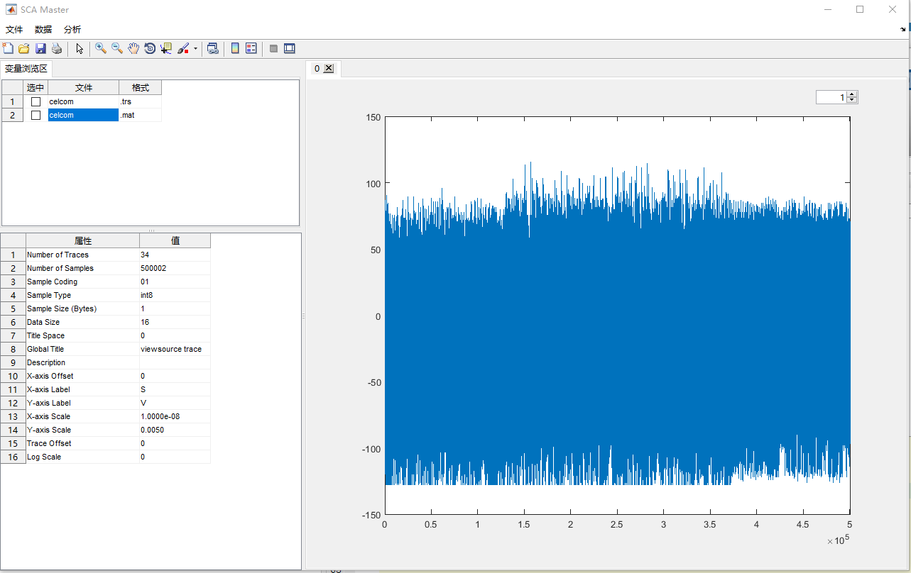
右上角旋钮中显示的是当前所查看的曲线是第几条。
你可以点击按钮，查看上一条或下一条曲线；也可以直接输入数字，跳到对应曲线；还可以通过键盘的上下方向键，切换查看的曲线。
降采样
有时候，我们每条曲线采的样本点数过多，数据量很大，处理时不仅耗时，而且还可能造成内存溢出。 因此我们有必要对功耗曲线进行降采样，以减少每条曲线的样本点数，提高后续处理的效率。
仍然是单击想处理的曲线所在行，右键选择“降采样”，这时会弹出“降采样参数设置”的界面。
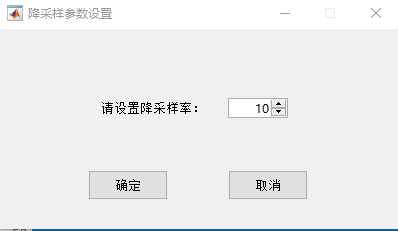
这里的“降采样率”指的是曲线数目减少的倍数。比如采样率设置为10，那么假设原先每条曲线有10000个点，降采样完就是1000个点。
选择适合的降采样率，点击“确定”。
这时我们可以看到变量浏览区又多了一行，并且文件名后面多了“_ds”。“ds“是 down sample（降采样）的首字母缩写。
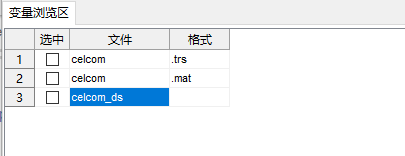
从图中可以明显看出降采样前后曲线的粒度变化。
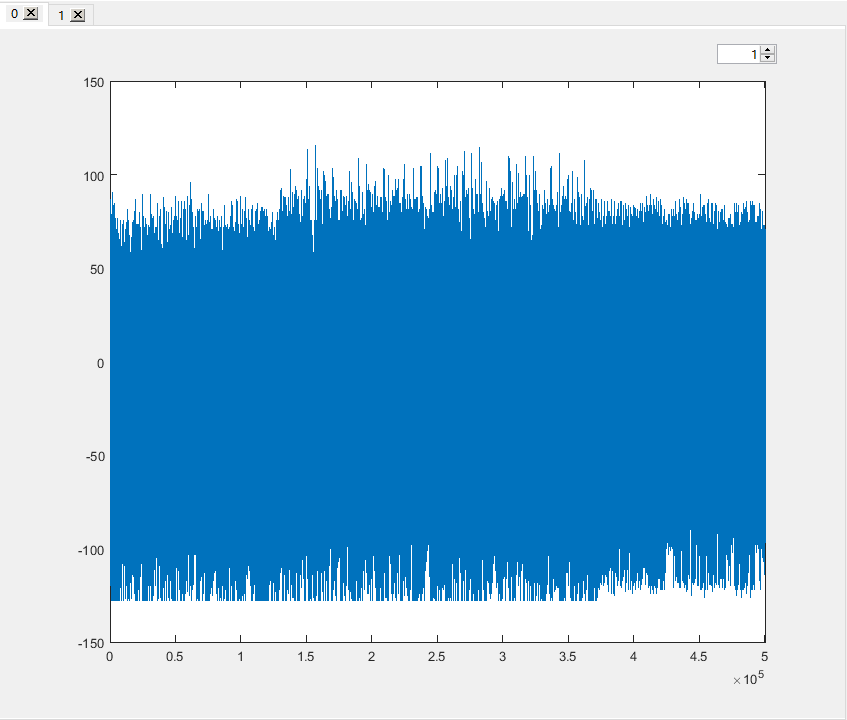 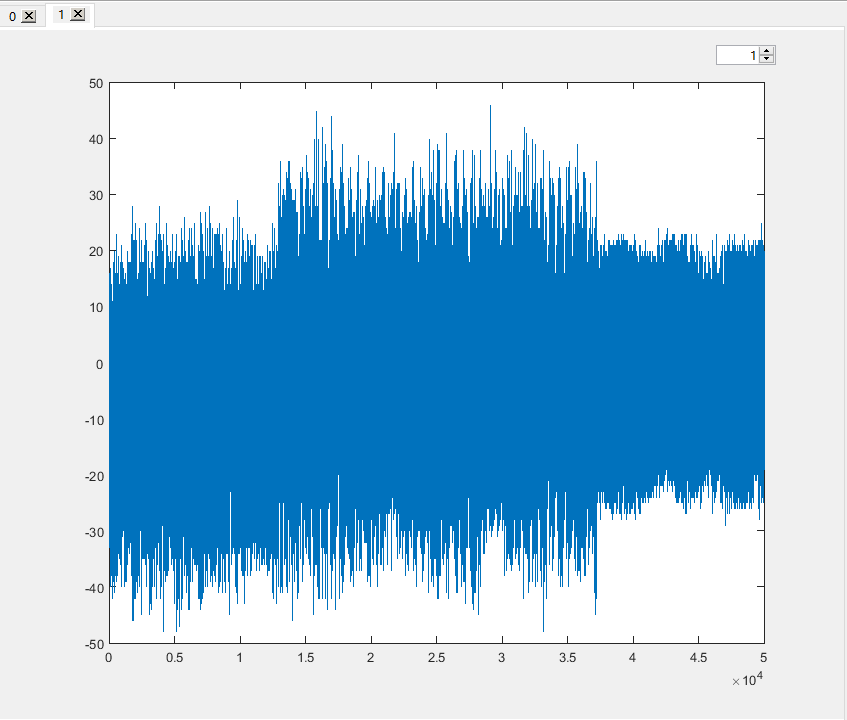
低通
采集到的曲线往往会混有很多噪声，这些噪声大多数都处在高频部分，对我们的功耗分析产生干扰。 对曲线进行低通，可以滤掉大部分噪声，提高处理的效率和精度。
单击降采样后的曲线，右键选择“低通”。稍等几秒，便会弹出低通参数设置的窗口。
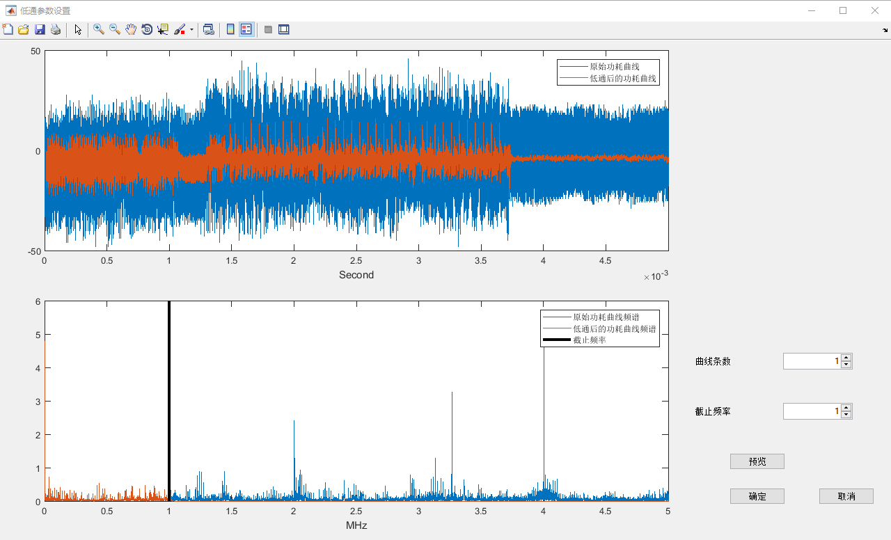
上方的图像展示了功耗曲线的时域信息，下方的图像呈现了频域信息。
你可以设置右侧“曲线条数”的值，来查看不同曲线的时域和频域信息。
拖动频域图像中黑色的粗线，来设置低通的截止频率；也可以通过设置右侧“截止频率”中旋钮的值，实现同样的效果。
调整好截止频率后，可以点击“预览”，查看新的截止频率对曲线产生的影响。 需要注意的是，由于低通操作需要耗费一定的时间，因此尽量避免频繁地点击预览。
如果调整完成，点击“确定”，软件就会按照你设置的参数对曲线进行低通。
这时我们可以看到变量浏览区又多了一行，并且文件名后面多了“_lp”。“lp“是 low pass（低通）的首字母缩写。
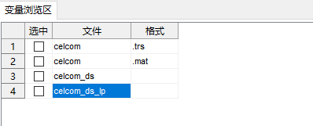
从图中可以明显看出低通前后曲线的粒度变化。
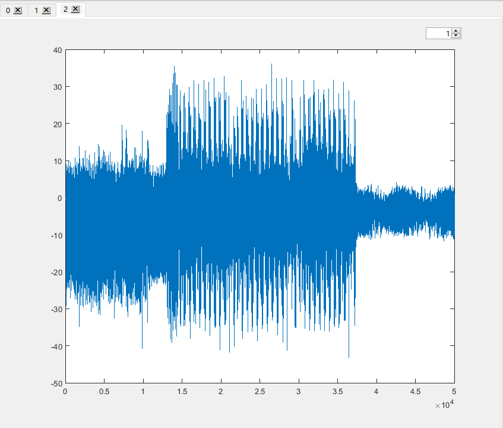
对齐
由于各种原因，硬件设备采集到的不同功耗曲线并不是严格对齐的。 这句话的意思是，在采集到的不同曲线的相同时刻，对应的实际程序指令并不相同。 如果功耗曲线之间没有对齐，就无法进行有效的差分功耗分析。 因此，我们需要对将要攻击的区域进行对齐，以保证同一时刻，对应的程序指令是相同的。
攻击
在对曲线进行了上述各种预处理之后，我们就可以对曲线实施差分功耗分析了。